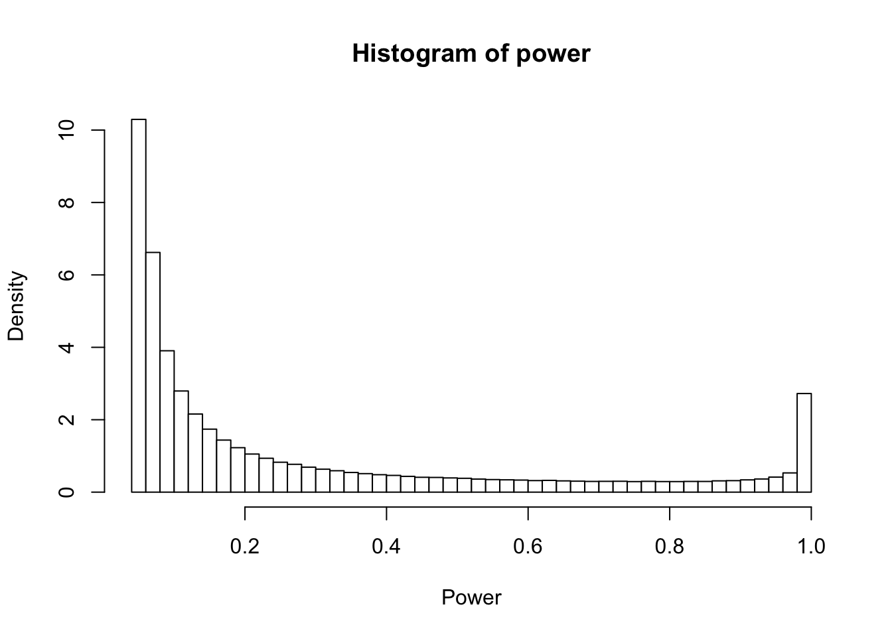

library(tidyverse)
rmix = function(n,p,m,s){
d=rmultinom(n,1,p)
rnorm(n,m%*%d,s%*%d)
}
# Standard deviation for the snr
s <- c(0.61, 1.42, 2.16, 5.64)
p <- c(0.32, 0.3, 0.3, 0.07)
m <- rep(0, 4)
n <- 1e6
snr <- rmix(n, p, m, s)
z <- rnorm(n, snr, 1)I keep coming back to A New Look at P Values for Randomized Clinical Trials – an instant classic paper on RCTs, which could be extended to online experimentation as well. The authors, who include Gelman and Greenland, take an empirical Bayes approach to infer the joint distribution of z statistics and the Signal to Noise Ratio (SNR, the true effect divided by the standard error) from the Cochrane Database of Systematic Reviews, thereby being able to examine the relationship between, as an example, the exaggeration factor (the amount by which the estimate of the treatment effect over estimates the truth) and the p value. It is an incredibly well written paper and I highly recommend you read it.
Quoting from the paper directly
Recall that the z statistic is the estimated effect divided by the standard error (SE) of the estimate. We also wish to consider the signal-to-noise ratio (SNR), which is the true effect divided by the SE of the effect estimate. The SNR cannot be observed directly, but there is a very simple relation between the SNR and the z statistic. Because the estimated effect is equal to the true effect plus an independent normal error term, the z statistic is equal to the SNR plus an independent, standard normal error term.1 Thus, the distribution of the z statistic is the “convolution” of the distribution of the SNR and the standard normal distribution. The crux of our approach is that we can estimate the distribution of the absolute z statistics across the Cochrane Database and then derive the distribution of the absolute SNRs by “deconvolution,” that is, by removing the standard normal component. This allows us to study a number of important statistical properties of the RCTs in the Cochrane Database.
The authors give the weights and standard deviations for the elements of the mixture distribution, and from these we can simulate SNRs from the population of all trails that are exchangeable with those in the database (i.e. trials that could be in the Cochrane Database in the future). In R…
Now that we have the simulated SNR and z statistics, it is very straight forward to replicate all results from the paper. As an example, here is how we can re-create figure 2 (the distribution of statistical power across the simulated SNR).
power <- pnorm(-1.96 - snr) + 1 - pnorm(1.96-snr)
hist(power, xlab = 'Power', breaks=40, col = 'white', probability = T)
The paper goes on to make a number of conclusions, including that most RCTs which report a statistically significant treatment effect exaggerate the effect size, sometimes dramatically so (see Figure 3, top left). This exaggeration made me think “why not just shrink the damn thing then”, and given some of the information in the paper, I think we can come up with a nice little rule of thumb: most RCTs should shrink the treatment effect by about 15%. Let’s examine why.
The mixture distribution for the z statistics is comprised of 4 normal distributions with standard deviation 1.17, 1.74, 2.38, and 5.73, with mixture weights 0.32, 0.3, 0.3, and 0.07. This means that the standard deviation of the mixture is 2.32. Let’s make a not-too-wrong assumption that the distribution of z values is approximately normal. Granted, this is demonstrably false – the distribution has fatter tails, but doing so will allow us to treat this distribution as a prior for future RCTs. Now, suppose we run an RCT in the future which would be exchangeable with those in the Cochrane database. Since the distribution of z is assumed normal then we can shrink the estimates by leveraging a conjugate normal prior (granted, prior for the z is not normal, but it is very close).
s_z <- c(1.17, 1.74, 2.38, 5.73)
s_weighted <- sqrt(weighted.mean(s_z^2, p))
new_snr <- rmix(n, p, m, s)
new_z <- rnorm(n, new_snr, 1)
shrunken_z <- new_z * 1.0 / (1/s_weighted^2 + 1)
new_exag <- abs(new_z/new_snr)
shrunken_exag <- abs(shrunken_z/new_snr)Note that the z are multiplied by a factor which is approximately 0.843 (round up to 0.85 for a nice number, which is equivalent to a 15% reduction). Now, let’s recreate figure 3 for the shurnken estimates and compare them to the unshrunken estimates
Code
p_values <- 2*pnorm(-abs(new_z))
p_strata <- cut(p_values, c(c(0, 0.001, 0.005, 0.01, 0.05, 0.1), seq(.5, 1, 0.1)))
df_sum <- tibble(
p_strata = p_strata,
Orignal = new_exag,
Shrunken = shrunken_exag
) %>%
pivot_longer(-p_strata, names_to = 'estimate', values_to = 'exag') %>%
group_by(p_strata,
estimate
) %>%
summarise(
q25 = quantile(exag, 0.25, na.rm = TRUE),
q50 = quantile(exag, 0.50, na.rm = TRUE),
q75 = quantile(exag, 0.75, na.rm = TRUE),
mn = mean(exag)
) %>%
mutate(strata_num = as.numeric(p_strata))
# Plot
dodge_width <- -0.2
ggplot(df_sum, aes(x = strata_num, fill = estimate)) +
geom_rect(aes(
xmin = strata_num - 0.2 +
ifelse(estimate == "Orignal", -dodge_width, dodge_width),
xmax = strata_num + 0.2 +
ifelse(estimate == "Orignal", -dodge_width, dodge_width),
ymin = q25, ymax = q75
), alpha = 0.7, color='black'
) +
geom_segment(aes(
x = strata_num - 0.2 +
ifelse(estimate == "Orignal", -dodge_width, dodge_width),
xend = strata_num + 0.2 +
ifelse(estimate == "Orignal", -dodge_width, dodge_width),
y = q50, yend = q50
),
size = 1
) +
geom_hline(yintercept = 1, color = "grey50", size = 2, alpha = 0.5) +
scale_x_reverse(
breaks = unique(df_sum$strata_num),
labels = levels(p_strata),
guide = guide_axis(n.dodge = 2)
) +
labs(
x = "P Value Strata",
y = "Exaggeration Quartiles",
fill='Estimate'
) +
theme_classic(base_size = 14) +
theme(legend.position = 'top') +
scale_fill_brewer(palette = "Set1")Unsurprisingly, the estimates are shrunk towards an exaggeration factor of 0.0 and results from statistically significant trials have a smaller exaggeration factor. However, we can do better. van Zwet (also an author on the paper) published a shrinkage estimator based on these data in Statsitics in Medicine in 2021. His approach was to use \(\mathbb{E}(\mbox{SNR} \mid z)\) as the shrunken estimate, and provides some code in that paper from which to estimate the conditional distribution of the SNR given z from the mixture of normals (it is actually quite clever and doesn‚Äôt require any regression, only some algebra). I‚Äôve plotted van Zwet‚Äôs exaggeration factors below, which are even better than the normal normal conjugate model‚Äôs! Unfortunately, the shrinkage van Zwet‚Äôs shrinkage estimator doesn‚Äôt have such a simple rule of thumb which could make for a snappy, Letterkenny referencing, blog post ü§∑.
Code
z_hat <- map_dbl(new_z, ~{
s2 <- s_z^2
q <- p*dnorm(.x,0,sqrt(s2+1))
q <- q/sum(q)
m <- .x * s2 / (s2+1)
sum(q * m)
})
zwet_shrunken_exag <- abs(z_hat / new_snr)
# Assign a numeric index per estimate for dodging
df_sum <- tibble(
p_strata = p_strata,
Orignal = new_exag,
Shrunken = shrunken_exag,
`van Zwet Shrunken` = zwet_shrunken_exag
) %>%
pivot_longer(-p_strata, names_to = 'estimate', values_to = 'exag') %>%
group_by(p_strata,
estimate
) %>%
summarise(
q25 = quantile(exag, 0.25, na.rm = TRUE),
q50 = quantile(exag, 0.50, na.rm = TRUE),
q75 = quantile(exag, 0.75, na.rm = TRUE),
mn = mean(exag)
) %>%
mutate(strata_num = as.numeric(p_strata)) %>%
group_by(p_strata) %>%
mutate(est_index = as.numeric(factor(estimate,
levels = c("van Zwet Shrunken", "Shrunken", "Orignal")))) %>%
ungroup()
bar_width <- 0.25
ggplot(df_sum, aes(x = strata_num, fill = estimate)) +
# IQR rectangles
geom_rect(aes(
xmin = strata_num + (est_index - 2) * bar_width,
xmax = strata_num + (est_index - 2) * bar_width + bar_width,
ymin = q25, ymax = q75
),
colour = "black", alpha = 0.7
) +
# Median lines
geom_segment(aes(
x = strata_num + (est_index - 2) * bar_width,
xend = strata_num + (est_index - 2) * bar_width + bar_width,
y = q50, yend = q50
),
size = 1, colour = "black"
) +
geom_hline(yintercept = 1, color = "grey50", size = 1.5, alpha = 0.5) +
scale_x_reverse(
breaks = unique(df_sum$strata_num),
labels = levels(p_strata),
guide = guide_axis(n.dodge = 2)
) +
labs(
x = "P Value Strata",
y = "Exaggeration Quartiles",
fill = 'Estimate'
) +
theme_classic(base_size = 14) +
theme(legend.position = 'top') +
scale_fill_brewer(palette = "Set1")